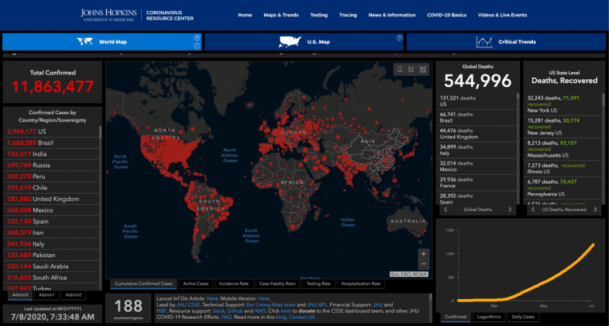
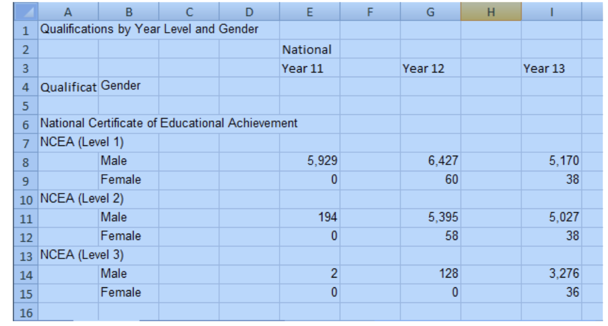
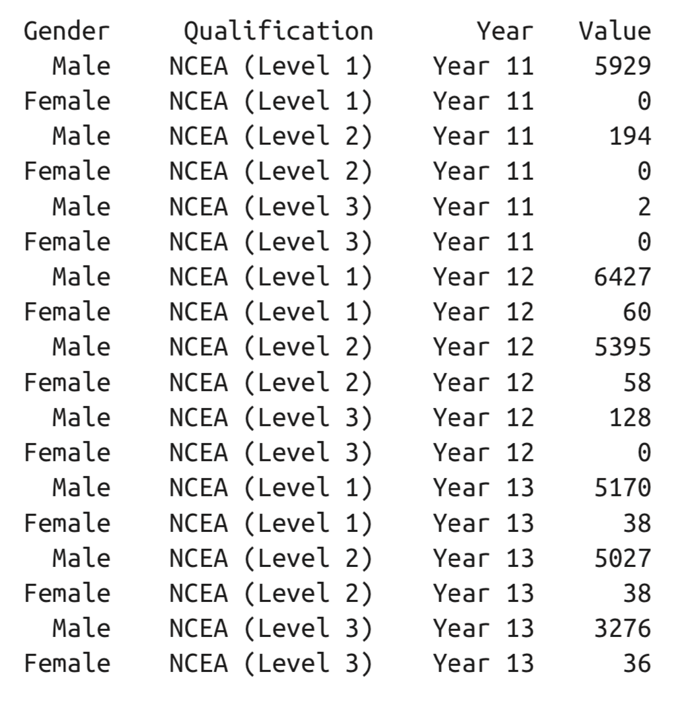
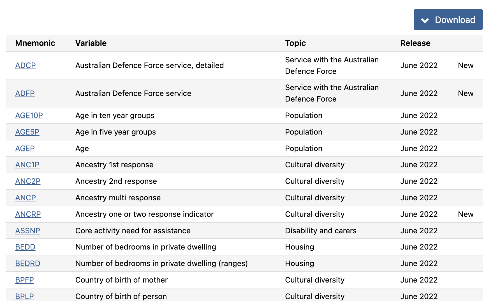
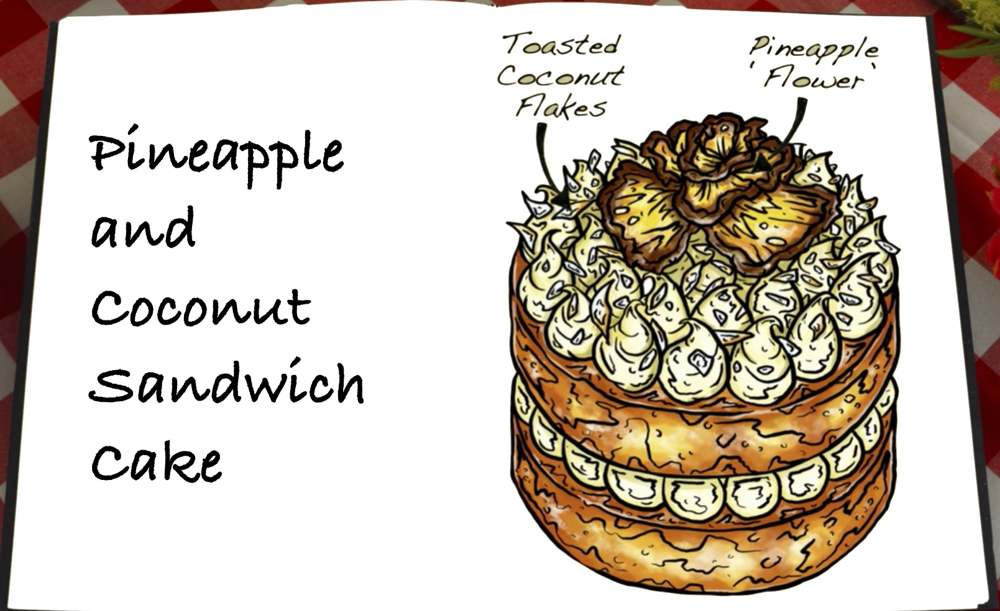

ETC5512
The Proper Care and Feeding of Wild Caught Data
Lecturer: Kate Saunders
Department of Econometrics and Business Statistics
Time has come to wrap up this unit
Suppose you are the data curator. What should you know?
Learning Objectives
We will learn:
- About organising data into spreadsheets for analysis
- Rules for caring and feeding your data
- Realistic guide to making data available
We will also discuss SETUs and Assignment 4 today.
Wild Caught Data
Back in week 1 …
Open data is … 1
a raw material for the digital age but,
it’s unlike coal, timber or diamonds,
it can be used by anyone and everyone at the same time.
Let’s remind ourselves some examples why open data is important!
Why do we need open data?
Important
Help make governments more transparent.
- Open data allowed citizens in Canada to save the government billions in fraudulent charitable donations
Building new business opportunities
- Transport for London has released open data that developers have used to build over 800 transport apps.
Protecting the planet
- Open data can supoort early warning systems for environmental disasters
- Open data is also helping consumers to understand their personal impacts on the environment
Our working definition
Wild caught data is:
data the can be freely used, modified, and shared by anyone for any purpose, and
The data source is traceable, the data collection is transparent, and the data is updated as new measurements arrive, and
In case of data processing, the process is clearly described and reproducible.
It should be fresh, interesting, exciting!
And ideally collected locally, and about our own lives
Tell me about cool examples!
It’s important to stop and reflect on what we’ve learnt.
Break out session
Discuss in your tables open data examples you’ve seen that:
- promote transparency and accountability
- create new business opportunities, or
- generate benefits for society.
You may also like to reflect on our case studies or where you can source open data from.
How has your understanding of open data changed since you started this unit?
Common pitfalls
Working with wild data
Caution
- Wild caught data is inherently messy
- That’s partly because the real world is messy! So the data reflects that
But their are some common pitfalls we can easily avoid!
Example: Johns Hopkins COVID19
- COVID-19 Data Repository by the Center for Systems Science and Engineering (CSSE) at Johns Hopkins University
- Jan 23 (?) start of data collection
Also:
Dashboard snapshot from July 8th 2020

Vast number of people and organisations collating data, often (others) cross-checking numbers between sites
Difficulties
- Changing formats! > … collated by Johns Hopkins University Center for Systems Science and Engineering (JHU CCSE) … we will nevertheless scrape data from the relevant wikipedia pages, because it tends to be more detailed and better referenced than the equivalent JHU data … Tim Churches blog Mar 1
- Changing links!
- So many links on the website - which data to use?
Spreadsheets
Human consumption

Computer consumption

Source: Murrell (2013) Data Intended for Human Consumption
Spreadsheets for computer consumption
- write dates like YYYY-MM-DD,
- do not leave any cells empty,
- put just one thing in a cell,
- organize the data as a single rectangle (with subjects as rows and variables as columns, and with a single header row),
- create a data dictionary,
- do not include calculations in the raw data files,
- do not use font color or highlighting as data,
- choose good names for things,
- make backups,
- use data validation to avoid data entry errors, and
- save the data in plain text files.
Broman and Woo (2018) Data Organization in Spreadsheets https://doi.org/10.1080/00031305.2017.1375989
Watch out for dates
Good practice to store dates as Year, Month, Day columns. Much is safer across systems.

Remmber tidy format
Tip
The cells in your spreadsheet should each contain one piece of data. Do not put more than one thing in a cell.
In assignment 1 we saw a column with “HAZARD flooding”. It would be better to separate this into “HAZARD” and “flooding” columns.
Remember, airlines data, time zone in one column, departure time in another. This is partly technical because multiple time zones can’t be stored in a single column.
Create a data dictionary
The census has an extensive data dictionary for each year distributed, giving variable names, and also explanation of levels in categorical variables.
But, it can still be hard to find what you are looking for.

Beware!!
In our wild caught data anaology
Beware your spreadsheets don’t “bite” your data!
Useful link
You can validate the integrity of your csv file with
http://csvlint.io
Caring for you wild data
Caring for wild data
We want to look after our wild data so it doesn’t bite us!
We want this
Not this
10 Simple Rules
Goodman et al (2014) created ten Simple Rules for the Care and Feeding of Scientific Data. These apply to us.
We can replace “science” with “data science”, “data analysis”, “analytics”, “business intelligence”.
🤔 So think about what these rules imply for business and government data.
All too common

Care and feeding
The Rules
Love Your Data, and Help Others Love It, Too
Share Your Data Online, with a Permanent Identifier
Conduct Science with a Particular Level of Reuse in Mind
Publish Workflow as Context
Link Your Data to Your Publications as Often as Possible
Publish Your Code (Even the Small Bits)
State How You Want to Get Credit
Foster and Use Data Repositories
Reward Colleagues Who Share Their Data Properly
Be a Booster for Data Science
Rule 1
Love Your Data, and Help Others Love It, Too
Note
What are some ways to show your love?
What data have we seen that isn’t loved?
- Nurture:
- feed,
- hug, check on it
- dress it nicely
- give it a name
- Show it off:
- tell someone about it
- demonstrate how it can be used
Rule 2
Share Your Data Online, with a Permanent Identifier
Rule 3
Conduct Science with a Particular Level of Reuse in Mind
Note
- keep careful track of versions of data and code
- to be fully reproducible, then provenance information is a must
- working pipeline analysis code,
- a platform to run it on, and
- verifiable versions of the data.
- what types of re-use do you think others might make of your work?
Rule 9
Reward Colleagues Who Share Their Data Properly
Note
- Build promotion and award systems that count data and code-sharing activities.
- Consider this activity an important part of your own data science work.
- Clear guidelines for credit
Let’s review some examples
Johns Hopkins COVID19
What’s really nice 😄:
- Github page
- Compiled data from various sources, sources listed
- Update time stamp
- Versioning
- Issues for two way conversations with users
BTS air traffic
Bureau of Transportation Statistics (Assignment 1)
- Many, many different tables. The extent and value of the ontime performance database may not be immediately obvious. Need to know what you are looking for, many links, and several clicks deep ❌
- Sporadically missing chunks ❌
- No API for other software, laborious to download large chunks ❌
- Data provided by airlines is required, regular reporting is incentivised. Regularly updated, time stamp ✅
- Small chunk
csvfile is nicely rectangular ✅
Atlas of Living Australia
CSIRO (Assignment 1)
- Vast amount of data ✅
- Many different ways to access, including API ✅
- Hard to navigate the ways to access and what information is provided ❌
- Data stored is sporadic, on a volunteer basis ❌
- Data identifier (DOI) is provided with each download ✅
ABS Census Data
- Updated regularly, for each census ✅
- Data packs, easy to find ✅
- Download has regular file structure ✅
- Finding variable of interest is hard, though ❌
- Spreadsheet with a gazillion tables, and variables are coded into column headers ❌
Making your own cake!
Raw Ingredients or Final Product?
You’ve seen lots of examples of different case studies now (cakes).
Remember our teaching philosophy of “Let them eat cake (first)”
It’s time to show us that you know how to put the raw ingredients together to make your own cake.

Assignment 4 - Brief
Some me what you can do!
Show off what you’ve learnt and how far you’ve come!
Everyone will be on a slightly different journey here.You can either use open data to analyse a question you:
- find fun or are passionate about, or
Use open data to consider a question that:
- promotes transparency and accountability
- create new business opportunities, or
- generate benefits for society.
- promotes transparency and accountability
Assignment 4 - Skills
What I’m examining
In Task 1 I want to see you can:
source open data appropriate for a task
can clearly document the download and processing steps
can curate your data to share with others
Assignment 4 - Skills
What I’m examining
In Task 2 I want you share your own case study in a blog:
show you know how to be curious about data
show you can use open data to answer a question
show you can think critically about a problem
show you can write about your analytics
show off the coding skills you’ve learnt
Assignment 4 - Reflection
What I’m examining
In Task 3 I also want you reflect on your analysis:
share challenges you faced working with your data
share specific insights into your approach
share your ambitions for future work
share limitations of your data or analysis (may also apply for task 2)
clearly communicate any assumptions (may also apply for task 2)
Skill demonstration
Success
To be successful on assignment 4 I suggest going back through the lectures so far.
Take a look at the variety and depth of topics we’ve covered!
Ensure that in assignment 4 you demonstrate knowledge gained from a few of the different lectures and assignments.
Wrap Up
Summary
Wrapping up this unit you should:
Understand the definitions, allowed usage, digital identification and licensing of open data
Know about common open data sources, how they are used and effectively search for new sources
Explain the differences between data collection methods and the limitations for data analysis
Work with the range of different data formats of open data
Understand ethical constraints and privacy limits when working with open data
Recognise the components of effective curation needed for open data
Parting Comment
I love teaching this unit
I truly believe the skills you encounter in this unit, particularly the learning to deal with messy real-world data and the problem solving skills will set you in good stead for whatever career you have after this.
I also like to think that you will take with you a healthy respect for data ethics and data privacy, and I am grateful I got to share that with you.
I wish everyone the best of luck in their future studies and careers.
Questions

ETC5512